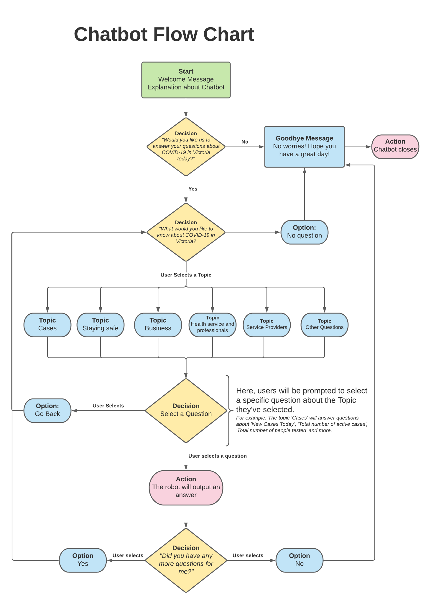
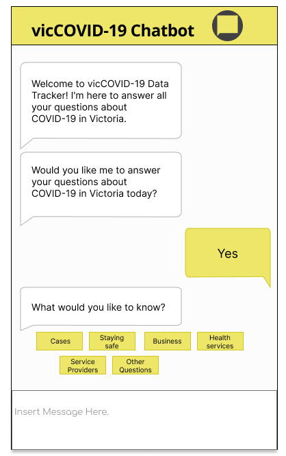

Description
The chatbot will be an interactive entity which answers Victorians’ frequently asked questions about COVID-19. It will answer questions about cases, safety during the pandemic, business, information for health services and professionals, guidelines for service providers and specific questions about restrictions.We decided to implement a Chatbot as we wanted to ensure Victorians are provided with the right information about staying safe and healthy during the pandemic, and avoid getting fined for doing the wrong thing. Though our website is primarily a data tracker, we also believe that it is important to show Victorians how they can stay safe during the pandemic and know where they can reach out to.
Our group chose to present the FAQ as a Chatbot as it provides our users with a more interactive and comprehensive way of finding information about COVID-19. We also chose this design because it is a unique way of answering users’ questions and is also very easy to use and access.
How does it work?
The interaction between the chatbot and user will be made up of inputting multiple-choice answers and outputting answers in text boxes. This will be created with tidio.com, a third-party application which creates interactive chatbots that can be implemented onto websites. The diagram below shows the interaction between the user and chatbot, and how users will get their answers. User Stories
-
As a parent,
I want to know how I can stay safe from COVID-19,
So I can help keep my family and I safe. -
As an essential worker,
I want to know what the symptoms of COVID-19 are,
So I know when I should get tested. -
As a worker,
I want to know if I need work permission after lockdown period
So I know if I need to prepare the necessary documents. -
As a student,
I want to know what the current restriction levels are,
So, I can make sure I do the right thing during COVID-19. -
As a student,
I want to have access to mental health resources,
So I can stay mentally healthy during lockdown. -
As an elderly citizen,
I want to know which area has the most deaths from COVID-19,
So I know if I need to move places or be taken care of by my family during lockdown. -
As a business owner,
I want to know how many active cases are in my area,
So I can adjust my business operations to keep my employees safe.
Prototype
Validation
This feature will be tested for validation by observing if the inputted answers lead to the relevant outputs and answers the questions thoroughly. For example: If a user inputs “Staying Safe during the pandemic”, we want the chatbot to output information about “How to stay Safe”, “What are the symptoms” and “Where you can get tested”.The main objective of the Chatbot is to provide the right answers to the user’s queries. Hence, the focus of the validation testing is to see if the chatbot outputs the correct information.